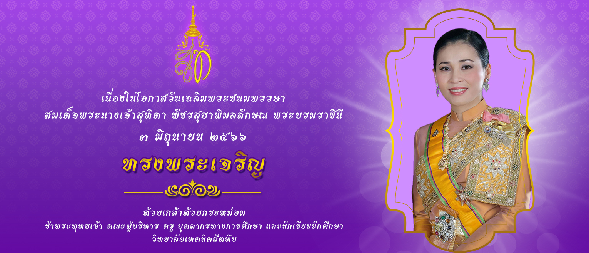

| 28/06/66 | ประกาศวิทยาลัยเทคนิคสัตหีบ เรื่อง รายชื่อผู้มีสิทธิ์สอบคัดเลือกลูกจ้างชั่วคราว ตำแหน่งครูพิเศษสอน (ช่างยนต์) |
| 28/06/66 | ประกาศวิทยาลัยเทคนิคสัตหีบ เรื่อง รายชื่อผู้มีสิทธิ์สอบคัดเลือกลูกจ้างชั่วคราว ตำแหน่งเจ้าหน้าที่งานบุคลากร |
| 13/06/2566 | ประกาศวิทยาลัยเทคนิคสัตหีบ เรื่อง การรับสมัครลูกจ้างชั่วคราว ตำแหน่งเจ้าหน้าที่ จำนวน 2 อัตรา |
| 03/05/66 | ประกาศจัดซื้อจัดจ้าง เรื่อง ประกวดราคาซื้อโครงการเงินอุดหนุนค่าอุปกรณ์การเรียนของนักเรียนสายอาชีพ อาชีวศึกษา ประจำปีงบประมาณ 2566 ด้วยวิธีประกวดราคาอิเล็กทรอนิกส์ (e-bidding) |
| 25/04/66 | ประกาศจัดซื้อจัดจ้าง เรื่อง ประชาพิจารณ์ (ร่าง) ประกาศและร่างเอกสารประกวดราคาจัดซื้อโครงการเงินอุดหนุนค่าอุปกรณ์การเรียนของนักเรียนสายอาชีพ อาชีวศึกษา ประจำปีงบประมาณ 2566 |
| ประชาสัมพันธ์จากงานอาชีวศึกษาทวิภาคี เรื่อง ขั้นตอนการยื่นคำร้องขอออกฝึกงานและฝึกอาชีพ ประจำภาคเรียนที่ 2 ปีการศึกษา 2566 |
| ประชาสัมพันธ์จากงานอาชีวศึกษาทวิภาคี เรื่อง รับสมัครนักศึกษาฝึกงาน ประจำภาคเรียนที่ 2 ปีการศึกษา 2566 |
| ประชาสัมพันธ์จากงานการเงิน เรื่อง ใบสำคัญรับเงินเรียนฟรี 15 ปี ภาคเรียนที่ 1 ปีการศึกษา 2566 |
| ประกาศวิทยาลัยเทคนิคสัตหีบ เรื่อง กำหนดการลงทะเบียนเรียน ประจำภาคเรียนที่ 1 ปีการศึกษา 2566 (สำหรับนักศึกษาระดับชั้น ปวช.2 ปวช.3 และปวส.2) |
| ประกาศ เรื่อง รายชื่อนักเรียนนักศึกษาที่ยื่นเอกสารขอผ่อนผันการเข้ารับราชการทหาร ประจำปี 2566 |
| ประกาศวิทยาลัยเทคนิคสัตหีบ เรื่อง ช่องทางอิเล็กทรอนิกส์สำหรับติดต่อวิทยาลัยเทคนิคสัตหีบ |
| ประกาศวิทยาลัยเทคนิคสัตหีบ เรื่อง การประกาศเจตจำนงสุจริตในการบริหารงาน |
พิธีลงนามบันทึกข้อตกลงความร่วมมือ (MOU) เพื่อผลิตกำลังคนอาชีวะ ให้ตรงความต้องการตลาด EEC และพัฒนาระบบเครือข่ายความร่วมมือระหว่างสถานศึกษาและสถานประกอบการในการจัดการอาชีวศึกษา
ข้อมูลเพิ่มเติมวันที่ 16 มิถุนายน 2566
พิธีเปิด “โครงการอบรมขับขี่ปลอดภัยสร้างวินัยจราจรในสถานศึกษา” ร่วมกับ บริษัท ไทยฮอนด้า จำกัด และ บริษัท รวมยนต์มอเตอร์แลนด์ จำกัด
วันที่ 17 มิถุนายน 2566
พิธีเปิดโครงการพัฒนาศักยภาพผู้เรียนด้าน “การสร้างจิตสำนึกในการเป็นผู้ประกอบการ และเขียนแผนธุรกิจ” ประจำปีการศึกษา 2566
วันที่ 17 มิถุนายน 2566
การต้อนรับและร่วมหารือกับคณะผู้บริหาร บริษัท คาเนมิทสึพูลเล่ย์ จำกัด
วันที่ 9 มิถุนายน 2566
พิธีทำบุญตักบาตรถวายพระราชกุศล เนื่องในโอกาสวันเฉลิมพระชนมพรรษา สมเด็จพระนางเจ้าฯ พระบรมราชินี
วันที่ 3 มิถุนายน 2566
พิธีลงนามบันทึกข้อตกลงความร่วมมือทางวิชาการ ระหว่างวิทยาลัยเทคนิคสัตหีบ กับ บริษัท ฟอร์ด มอเตอร์ คัมปะนี (ประเทศไทย) จำกัด
วันที่ 17 มิถุนายน 2565
การต้อนรับ ดร. ประพิณ อภินรเศรษฐ์ นายกสมาคม Thai Automation and Robotics Association (TARA) ประธานอนุกรรมการ พร้อมคณะฯ เข้าร่วมประชุมคณะอนุกรรมการร่วมภาครัฐและเอกชน...
ข้อมูลเพิ่มเติมวันที่ 27 พฤษภาคม 2566
การประชุมหารือแนวทางความร่วมมือด้านอาชีวศึกษา ในการฝึกอบรมโดยใช้การทำงานเป็นฐานระหว่างกระทรวงศึกษาธิการแห่งราชอาณาจักรไทย กับกระทรวงแรงงานและเศรษฐกิจแก่งสาธารณรัฐออสเตรีย
ข้อมูลเพิ่มเติมวันที่ 26 พฤศจิกายน 2565